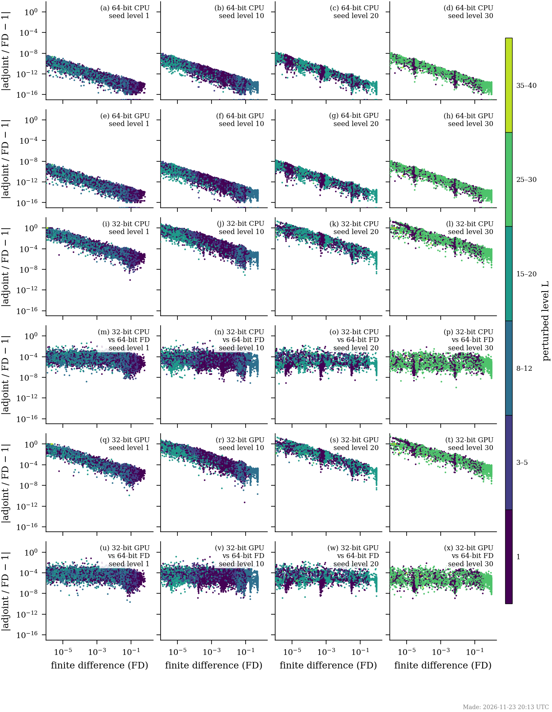
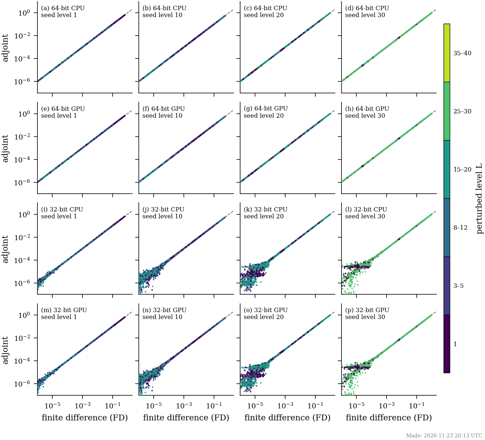

AT Adjoint Ladder
Which adjoints AtmosTransport.jl (AT) can compute, which of them we have verified, and the first verification step (A1: boundary-layer mixing alone), on the way to a CO₂ 4D-Var flux inversion with AT.
Which adjoints AT supports
AT ships a discrete adjoint only: the reverse pass replays the production step and transposes each operator, with the branches of limited schemes recorded on the tape. There is no continuous (reversed-wind, CONT) advection adjoint. Adjoints exist on the cubed sphere only. A configuration that uses an operator without an adjoint is rejected before the run, with the operator named (require_adjoint_support); nothing is silently approximated. Source: src/Adjoints/AdjointSupport.jl, src/Adjoints/Adjoints.jl, docs/src/theory/adjoint_status.md.
One model step, forward and reverse
Strang palindrome; convection after the advection, GCHP-style, at physics_cadence = :window. The adjoint walks the same sequence backwards. Each tape record holds the air mass entering the operator (and one byte of limiter branches per cell for limited PPM).
| Component | Option (TOML) | Adjoint | Notes |
|---|---|---|---|
| Grid | |||
| Cubed sphere | gnomonic, GEOS-native panels | AT tests only | All of the adjoint stack. Halo and corner exchange have exact transposes. |
| Lat-lon, reduced Gaussian | no adjoint | Forward only. | |
Advection ([advection]) | |||
| Upwind | scheme = "upwind" | AT tests only | Linear. With zero fluxes it is our "advection off" (A1, A2). |
| Slopes, unlimited | "slopes", no limiter | AT tests only | Linear: candidate for the B4 dot-product test. |
| Slopes, limited | "slopes" + limiter | no adjoint | |
| PPM, unlimited | "ppm", limiter = "none" | AT tests only | Linear; accepted only by the inversion driver. B4 candidate. |
| PPM, monotone / CW84 | "ppm", "monotone" | "cw84" | AT tests only | Limiter branches recorded: the exact derivative at the forward state (DISC). B3 epsilon sweep. |
| PPM with FV3 vertical | "ppm", vertical = "fv3_kord8" | no adjoint | Split-sweep PPM horizontally plus FV3 vertical has no record. |
| Lin–Rood ORD 5 | "linrood", upwind or fv3_kord8 vertical | AT tests only | Closest to GCHP. Tape must stay on the device: a C48 month fits one 46 GB GPU, C90 about 11 days. |
| Lin–Rood ORD 7 | same | AT tests only | Marked preview by AT. |
| No advection | scheme = "none" | no adjoint | Workaround: upwind with zero fluxes. |
| Reversed-wind (CONT) | no adjoint | Not implemented in AT. Would have to be built for a CONT vs DISC comparison. | |
PBL mixing ([diffusion] kind) | |||
| Holtslag–Boville local Kz | "geoschem_holtslag_boville_vdiff" | verified here | A1, 1 day, F32/F64 on CPU/GPU (Part 2). Kz from the meteorology, so the operator is linear in CO₂. |
| Beljaars–Viterbo local Kz | "tm5_beljaars_viterbo_local_kz" | AT tests only | Needs pblh, u*, heat flux, T2m: present in our binaries. |
| Constant Kz | "constant" | AT tests only | Useful as a simple reference. |
| TM5 Dkg exchange | "tm5_dkg" | exists, not in our data | Needs a binary built with include_tm5_diffusion. |
| TM5 Calc_Kzz | "tm5_calc_kzz" | exists, not in our data | Frozen-D adjoint. Needs the v5 TM5 PBL inputs. |
| GEOS-Chem non-local PBL | "geoschem_nonlocal_vdiff" | no adjoint | The counter-gradient emission profile is not transposed. This is what GCHP uses. |
| Surface-flux coupling | surface_flux_boundary false | true | AT tests only | Both: V/2 → S → V/2, and S(dt) → V(dt). |
Convection ([convection] kind) | |||
| CMFMC (GCHP-style) | "cmfmc", cloud_base = "cmfmc", no clamp | AT tests only | Default options. Transpose identity in F32/F64. Our binaries have CMFMC and DTRAIN. |
| CMFMC with clamp or archived cloud base | clamp = true | cloud_base = "dqrcu" | no adjoint | The positivity clamp is nonlinear and its branches are not taped. |
| CMFMC matrix (TM5 LU on CMFMC) | "cmfmc_matrix" | AT tests only | Only with use_collab_lu = false, lmax_conv = 0, n_merge = 1. |
| TM5 four-field | "tm5" | exists, not in our data | Same restriction. Needs entu/detu/entd/detd (ERA5 binaries). |
| IFS | "ifs" | no adjoint | Forward only. |
| Other parts of the step | |||
| Surface flux | per-step emission rates | AT tests only | Gradient per step, aggregated into user windows (months). |
| Air-mass reset | preserve_tracer_mass | preserve_vmr | verified here | Default preserve_tracer_mass was active in A1 (hourly windows). |
| Chemistry | decay | no adjoint | Not needed for CO₂. |
| Physics cadence | :window | :substep | AT tests only | |
| Observations, controls, optimizer | |||
| Observation operators | layer, column mean, placed point, averaging-kernel column | AT tests only | Averaging-kernel column matches TM5-4DVAR's Fortran to 1e-13. One reverse pass for all observations. |
| Controls | surface-flux windows; initial condition | verified here | Initial-condition sensitivity used in A1. Surface-flux gradient: test A3. |
| Covariance, optimizer | B1/2, log-normal transform, gradient descent, L-BFGS | AT tests only | Preview. We may use our own Python L-BFGS-B instead. |
| Backends and precision | |||
| CPU, CUDA | Float32, Float64 | verified here | For the A1 operator. GPU adjoint advection uses atomic adds: not bit-reproducible. |
| Metal, ROCm | not used | Metal has no adjoint yet; ROCm not validated. | |
What this means for the ladder
A: column processes (advection off)
- done A1 Holtslag–Boville, 1 day
- next A1 1 month; A1 with Beljaars–Viterbo and constant Kz
- A2 + CMFMC (no clamp), + CMFMC matrix
- A3 with respect to the surface flux
B: advection alone
- B4 dot products: upwind, unlimited slopes, unlimited PPM (linear)
- B3 epsilon sweep: monotone/CW84 PPM, Lin–Rood ORD 5/7
- B1, B2, B5, B6 with the scheme(s) you choose
- No CONT adjoint: the CONT/DISC comparison needs new code
C, D, E: full model and gradient
- C1: chosen scheme + CMFMC + PBL mixing
- D1, D2: 4D-Var gradient with the averaging-kernel operator
- E3 becomes CPU vs GPU (AT runs on one device); E2 is the fixed-order observation injection
Precision
- Every step in Float32 and Float64, on CPU and GPU
- Float32 is judged against the Float64 finite difference, because Float32 finite differences are not reliable for small sensitivities (Part 2)
PBL mixing alone, 1 day
Question. Is AT's adjoint of boundary-layer mixing the exact transpose of the forward model, and is it accurate enough in Float32, on CPU and on GPU?
What is on and off. Only PBL mixing is on: Holtslag–Boville local Kz, computed from the meteorology. Convection, surface fluxes and chemistry are off. Advection is off: every mass flux is set to zero after AT loads it, with the upwind scheme, because NoAdvection has no adjoint. Each column is then independent, so one run tests all 6 × 90 × 90 = 48 600 columns. The operator is linear in CO₂, so the derivative does not depend on the size of the perturbation.
Initial condition and period. MERRA-2, cubed sphere C90, 72 levels, hourly met windows, 2022-07-01 00 UTC to 07-02 00 UTC. CO₂ 400 ppm everywhere. Forward runs perturb CO₂ by ±50 ppm at one level L per column (random, 1–40 from the surface, seed 1). The adjoint is seeded with 1 at one level r of every column at the end (r = 1, 10, 20, 30 from the surface) and gives dqend(r)/dq0(L), compared with the central finite difference (FD) of the forward runs.
What agreement means. Float64: |adjoint/FD − 1| at round-off (the GCHP test reached ≤ 1.8e-6). Float32: the error measured against the Float64 FD is the error the 4D-Var gradient would carry from this operator.
Result
- Float64 passes on CPU and GPU. Weighted error 2–4e-14, median 2e-14 to 3e-12, 100 % same sign. CPU and GPU adjoints differ by at most 1.8e-11 relative.
- Float32 adjoint error is about 1e-5 against the Float64 FD: weighted 5e-6 to 3e-5, median 2e-6 to 1e-5, 99th percentile below 1e-3, no sign errors. The error does not grow for small sensitivities. The worst single columns (up to 0.13) have sensitivities near 1e-6.
- Float32 finite differences are not reliable for sensitivities below about 1e-3. Each FD subtracts two runs near 450 ppm, so Float32 round-off dominates (rows 3 and 5 of the figure). Use Float64 FD as the reference.
- The GPU is 8× faster than 16 CPU threads for the adjoint.
| Setup | Seed level | Columns | Weighted error | Median | 99th pct | Max | Same sign |
|---|---|---|---|---|---|---|---|
| Float64, against the Float64 FD of the same run | |||||||
| Float64 CPU | 1 | 17 299 | 1.8e-14 | 1.9e-14 | 3.9e-10 | 3.4e-9 | 100 % |
| 10 | 19 327 | 4.1e-14 | 4.6e-14 | 1.3e-9 | 8.7e-9 | 100 % | |
| 20 | 10 291 | 4.4e-14 | 2.6e-12 | 5.1e-9 | 1.9e-8 | 100 % | |
| 30 | 6 949 | 2.9e-14 | 8.9e-13 | 2.9e-9 | 1.2e-8 | 100 % | |
| Float64 GPU | 1 | 17 299 | 1.8e-14 | 1.9e-14 | 3.9e-10 | 3.4e-9 | 100 % |
| 10 | 19 327 | 4.2e-14 | 4.6e-14 | 1.3e-9 | 8.7e-9 | 100 % | |
| 20 | 10 291 | 4.5e-14 | 2.6e-12 | 5.1e-9 | 1.9e-8 | 100 % | |
| 30 | 6 949 | 3.1e-14 | 9.0e-13 | 2.9e-9 | 1.2e-8 | 100 % | |
| Float32 adjoint, against the Float64 CPU FD | |||||||
| Float32 CPU | 1 | 17 299 | 1.9e-5 | 1.0e-5 | 9.0e-4 | 7.0e-2 | 100 % |
| 10 | 19 327 | 2.5e-5 | 8.2e-6 | 9.1e-4 | 1.3e-1 | 100 % | |
| 20 | 10 291 | 1.0e-5 | 4.8e-6 | 8.7e-4 | 1.5e-2 | 100 % | |
| 30 | 6 949 | 5.1e-6 | 2.2e-6 | 4.0e-4 | 7.1e-3 | 100 % | |
| Float32 GPU | 1 | 17 299 | 1.9e-5 | 1.0e-5 | 8.9e-4 | 7.0e-2 | 100 % |
| 10 | 19 327 | 2.8e-5 | 8.0e-6 | 9.1e-4 | 1.3e-1 | 100 % | |
| 20 | 10 291 | 1.0e-5 | 4.8e-6 | 8.7e-4 | 1.5e-2 | 100 % | |
| 30 | 6 949 | 5.3e-6 | 2.2e-6 | 4.1e-4 | 7.1e-3 | 100 % | |
Timing
| Setup | Hardware | Forward, 1 day (3 tracers) | Adjoint, 1 day (4 seeds) | Adjoint per seed |
|---|---|---|---|---|
| Float64 CPU | 16 threads | 48 s | 398 s | ≈ 100 s |
| Float32 CPU | 16 threads | 47 s | 272 s | ≈ 68 s |
| Float64 GPU | NVIDIA L40S (GPU 1) | 40 s | 50 s | ≈ 13 s |
| Float32 GPU | NVIDIA L40S (GPU 1) | 39 s | 34 s | ≈ 9 s |

Scatter of adjoint against FD
